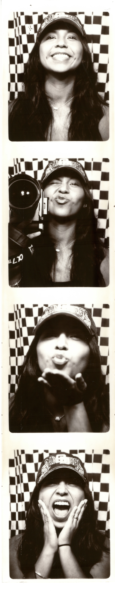

About
Hey, i'm
Itzel!
:)
Born and raised in SoCal, I've always been drawn to creating wherever life takes me. Photography, film, and video are how I freeze the moments that matter — the ones people look back on and smile.
Life moves fast; it's always a blur. That blur is part of the story. From analog film frames to digital edits, from portraits to short films — it's never about perfection. It's about living in the moment before it becomes a memory.
Let's Work Together →
SoCal
Born & Raised
Photo
Film · Video
↗
Available
